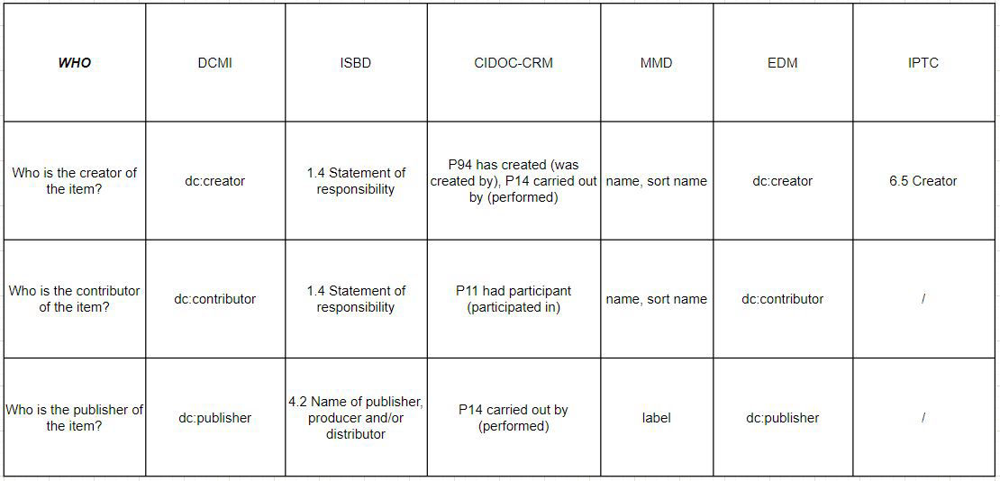
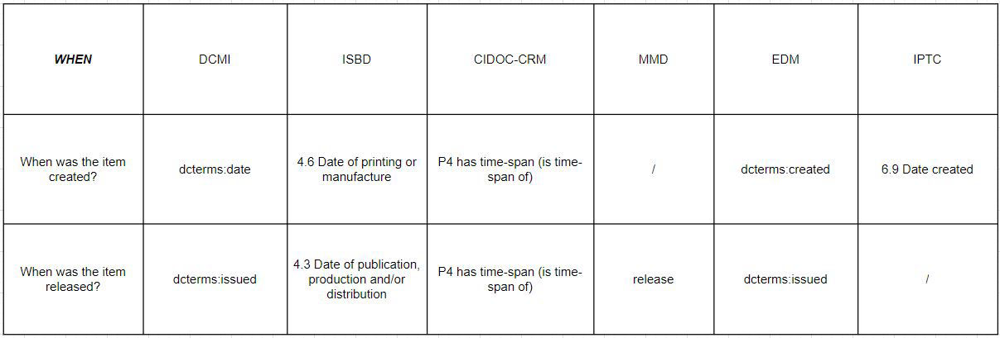
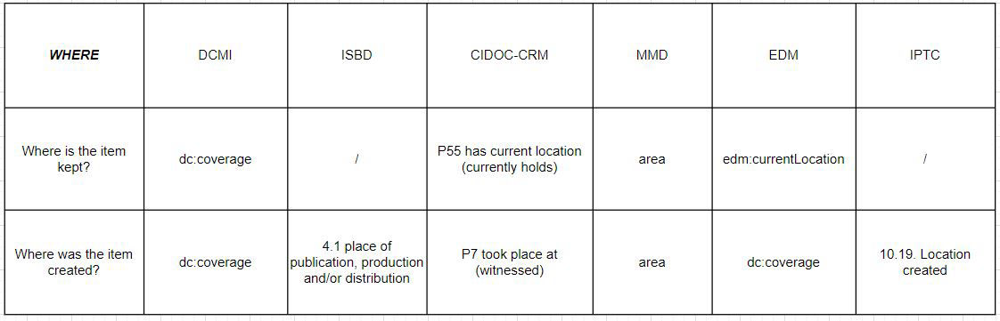
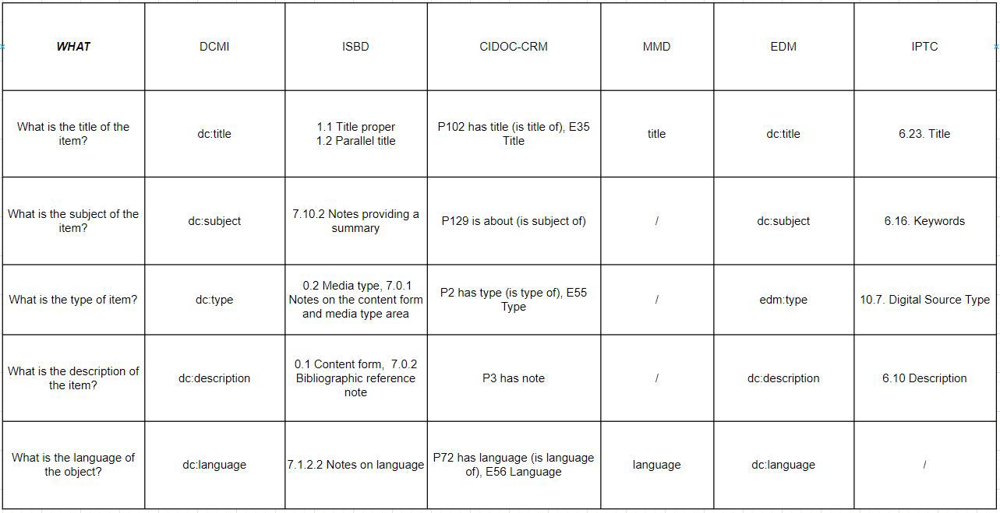

Institutes provide descriptions of items. These descriptions are created on the basis of a specific metadata standard and vary according to the institution, type of item and area. In this part, the metadata standards used by the institutes in describing the selected items were analyzed. In addition to this, the alignment of analyzed metadata between different standards has also been carried out.
Metadata Analysis
Metadata Alignment WHO
Metadata Alignment WHEN
Metadata Alignment WHERE
Metadata Alignment WHAT
